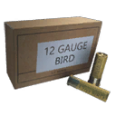
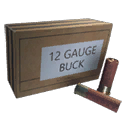
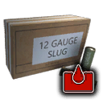
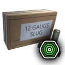
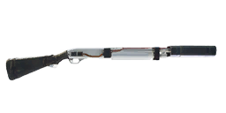

Damage by ammo and quality
The first table lists each ammo type the weapon can load. Damage is one projectile at the base value (Special quality), Armour and Comp. multiply it when the projectile hits an armour plate or a component, and Falloff is how the damage drops over distance. The second table works out one whole shot (damage × pellets × the quality multiplier) for every quality, at close range and before the difficulty setting.
| Ammo | Damage | Pellets | Armour | Comp. | Falloff / range |
|---|---|---|---|---|---|
 12ga Slug Ammo 12ga Slug Ammo | 100 | 1 | ×1 | ×1 | drops to 45% by ~300 m max 500 m |
 12ga Birdshot Ammo | 6 | 25 | ×1 | ×1 | drops to 50% by ~35 m max 100 m |
 12ga Buckshot Ammo | 17 | 9 | ×1 | ×1 | drops to 50% by ~35 m max 100 m |
| Ammo |  Q1 Q1 |  Q2 Q2 |  Q3 Q3 |  Q4 Q4 |  Q5 Q5 | Q5 vs armour | Q5 vs components |
|---|---|---|---|---|---|---|---|
| 12ga Slug Ammo | 50 | 62 | 75 | 88 | 100 | 100 | 100 |
| 12ga Birdshot Ammo | 75 | 93 | 112.5 | 132 | 150 | 150 | 150 |
| 12ga Buckshot Ammo | 76.5 | 94.9 | 114.8 | 134.6 | 153 | 153 | 153 |
| Quality | Q1 | Q2 | Q3 | Q4 | Q5 |  Q6 Q6 |
|---|---|---|---|---|---|---|
| Damage multiplier | ×0.5 | ×0.62 | ×0.75 | ×0.88 | ×1 | ×1 |
- A Dilapidated copy does 50% of the damage of a Special one (×0.5 against ×1), so upgrading quality is a straight damage increase.
- 12ga Buckshot Ammo puts 153 damage per shot on target if all 9 pellets hit, against 100 for one 12ga Slug Ammo. Range is the catch: the pellets' damage drops to 50% by ~35 m, the single round's drops to 45% by ~300 m.
Experimental ammo of this calibre
The game files flag these rounds as experimental-only: they are for the experimental version. The column shows one shot at the experimental multiplier (×1).
| Ammo | Damage | Pellets | Armour | Comp. | Falloff / range | Effects |
|---|---|---|---|---|---|---|
 12ga Slug Corrosive Ammo Exp. only | 100 | 1 | ×1.5 | ×0.5 | drops to 45% by ~300 m max 500 m | Over time: 6 every 4 s for 2 s to players and people |
 12ga Slug Medical Ammo Exp. only | 0 | 1 | ×1 | ×1 | drops to 45% by ~300 m max 500 m | Heals 50 (5 m) Medical rounds heal players near the impact; the pulse is healing, not damage. |
| Ammo | Q6 | Q6 vs armour | Q6 vs components |
|---|---|---|---|
| 12ga Slug Corrosive Ammo Exp. only | 100 | 150 | 50 |
Rounds whose projectile does no damage and that heal (medical ammo) are left out of this table: see Effects for the heal.
Experimental versionExperimental 12G Pump-Action

Experimental 12G Pump-Action is the Experimental version of this weapon. Its damage multiplier is ×1 (Special: ×1). See experimental weapons for the other experimental weapons.
The game files give the experimental version its own versions of 5 ammo types. These replace the normal values when fired from it. The damage column is one shot at the experimental multiplier (×1).
| Ammo (change from normal) | Damage | Pellets | Q6 | Armour | Comp. | Effects |
|---|---|---|---|---|---|---|
| 12ga Birdshot Ammo (Flechette) adds blast | 6 | 25 | 150 | ×1 | ×1 | Blast 2 (1 m) |
| 12ga Buckshot Ammo (Flechette) adds blast | 17 | 9 | 153 | ×1 | ×1 | Blast 6 (2 m) |
| 12ga Slug Ammo (Flechette) adds blast | 100 | 1 | 100 | ×1 | ×1 | Blast 50 (3 m) |
| 12ga Slug Corrosive Ammo (Flechette) adds blast; burn 6→30 per tick, 2→3 s | 100 | 1 | 100 | ×1.5 | ×0.5 | Blast 50 (3 m) Over time: 30 every 4 s for 3 s to players and people |
| 12ga Slug Medical Ammo (Flechette) adds blast; no heal pulse | 0 | 1 | 0 | ×1 | ×1 | Blast 125 (5 m); players 175 (5 m) This experimental version replaces the heal with a blast (values above). |
Augments25 of 28 fit
Augments go into slots that depend on quality. Following the in-game rules: Worn and Good weapons take one Primary augment, Exceptional and Special take a Primary and a Support augment, and Dilapidated and experimental weapons take none. A ✓ means the augment fits this weapon at that quality, as the game's equipment compatibility table says.
Primary augments
| Augment | Q2 | Q3 | Q4 | Q5 | Restriction | |
|---|---|---|---|---|---|---|
 | Acidic | ✓ | ✓ | ✓ | ✓ | – |
 | Adhesive Rounds | ✓ | ✓ | ✓ | ✓ | – |
 | EMP Detonation | ✓ | ✓ | ✓ | ✓ | – |
 | Health Stealing | ✓ | ✓ | ✓ | ✓ | – |
 | Machine Disarmer | ✓ | ✓ | ✓ | ✓ | – |
 | Prone Specialization | ✓ | ✓ | ✓ | ✓ | Melee weapons cannot use this augmentation. |
 | Rapid Reload | ✓ | ✓ | ✓ | ✓ | Melee weapons cannot use this augmentation. |
 | Scorching | ✓ | ✓ | ✓ | ✓ | Explosive weapons cannot use this augmentation. |
 | Sharpshooter | ✓ | ✓ | ✓ | ✓ | Melee weapons and explosive weapons cannot use this augmentation. |
 | Small Fryer | ✓ | ✓ | ✓ | ✓ | – |
 | Structure Destructor | ✓ | ✓ | ✓ | ✓ | – |
 | Titan Toppler | ✓ | ✓ | ✓ | ✓ | – |
 | Trick Shot Master | ✓ | ✓ | ✓ | ✓ | Only shotguns and melee weapons can use this augmentation. |
 | Unstoppable Shells | ✓ | ✓ | ✓ | ✓ | Melee weapons and explosive weapons cannot use this augmentation. |
 | Uranium Infused | ✓ | ✓ | ✓ | ✓ | – |
Don't fit: Final Round (Only handguns can use this augmentation.)
Support augments
| Augment | Q4 | Q5 | Restriction | |
|---|---|---|---|---|
 | Crouching Tiger | ✓ | ✓ | Melee weapons cannot use this augmentation. |
 | Hip Shooter | ✓ | ✓ | Melee weapons cannot use this augmentation. |
 | Hit and Run | ✓ | ✓ | – |
 | Oversized Magazine | ✓ | ✓ | Melee weapons and explosive weapons cannot use this augmentation. |
 | Quick Learner | ✓ | ✓ | – |
 | Scope Scout | ✓ | ✓ | Only weapons that can have a scope attached can use this augmentation. |
 | Skilled Spotter | ✓ | ✓ | – |
 | Slow and Steady | ✓ | ✓ | Melee weapons cannot use this augmentation. |
 | Sound Muffling | ✓ | ✓ | – |
 | Stabilization | ✓ | ✓ | Melee weapons cannot use this augmentation. |
Don't fit: Flurry of Blows (Only melee weapons can use this augmentation.); Power Attacker (Only melee weapons can use this augmentation.)
Skins5
Skins change only the look. All skins: weapon skins.
 ApocalypseDLC
ApocalypseDLC Disruptive ForestStarts locked
Disruptive ForestStarts locked Engraved ShowpieceStarts locked
Engraved ShowpieceStarts locked Graffiti ResistanceStarts locked
Graffiti ResistanceStarts locked Orange Venom CustomDLC
Orange Venom CustomDLCWhere to find it
The world files place 34 copies of the 12G Pump-Action at fixed spots (on top of the random weapon crates). Each spot has a fixed quality; this table counts them by region.
| Region | Dilapidated | Worn | Good | Exceptional | Total |
|---|---|---|---|---|---|
| Archipelago | 6 | 1 | – | – | 7 |
| South Coast | 1 | 1 | 1 | – | 3 |
| Farmlands | 2 | 4 | 2 | – | 8 |
| Forest | 2 | 5 | – | – | 7 |
| Marshlands | – | – | – | 1 | 1 |
| Himfjäll (Alpine Unrest) | 1 | 3 | 4 | – | 8 |
| Total | 12 | 14 | 7 | 1 | 34 |
The map opens on part of the 34 spots; zoom out (−) or drag to see the rest, open Detailed coordinates below, or open the full map.
Detailed coordinates34 spots
Every spot, with the nearest named map location and its distance. Coordinates are the game's world x / z; Map opens the interactive map on that spot.
Ammo and related weapons
Ammo it loads: 12ga Slug Ammo, 12ga Birdshot Ammo, 12ga Buckshot Ammo.
Experimental-only rounds (for the experimental version): 12ga Slug Corrosive Ammo, 12ga Slug Medical Ammo.
Other weapons that load the same ammo: Sjöqvist Semi-Auto, RACS-12 Semi-Auto Shotgun.
Other shotguns: Sjöqvist Semi-Auto, RACS-12 Semi-Auto Shotgun.